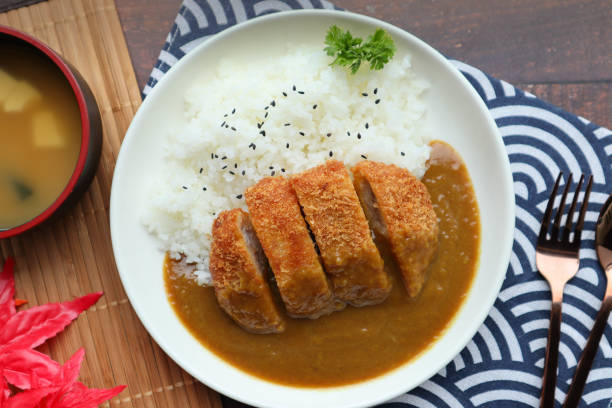

Tonkatsu Curry

Description
When I went to visit Japan. I found this
Japanese Restaurant that just sold Tonkatsu
Curry and it was the most delicious thing ever!
I think it was worth $5!! It was really cheap and
there was so much to offer!! I hope to use this recipe
myself for my own homemade curry!!
Of course the only sad part about all of this is that
it won't taste like the one back in Japan. But I have
full faith that it will have a delightful test!
Ingredients
- 6 oz. Boneless Pork Chop
- 1 cup flour
- 2 eggs
- 8 oz. Panko bread crumbs
- 1 cup white rice
- Olive oil
- 3 tablespoons butter
- 1/4 cup whole wheat flour
- 3 1/2 cups chicken or beef broth
- 1/2 teaspoon cayenne pepper
- 1 1/2 tablespoons Japanese curry powder
- Salt
Rice
- Add 1 cup of rice to the rice cooker or pot
- Rine rice with water 2-3 times
- Add 1 1/2 cups of water to the rice
- If using a rice cooker, place rice in the rice cooker and begin
- If using pot, allow the rice to come to a boil at medium heat
- Once the water is boiling, lower hear to low temperature and cover with a lid
- Allow rice to simmer for approximately 10-15 minutes
- Once all water has dissipated, fluff rice and serve
Tonkatsu
- Allow the boneless pork chop to defrost in the refrigerator for approximately 24 hours
- Place flour, eggs, and Panko bread crumbs in 3 separate bowls
- Whisk the eggs
- Butterfly the pork chop & pat the pork chop dry
- Thoroughly coat the pork chop with flour
- Once coated in flour, thoroughly coat the pork chop in egg
- Thouroughly coat the pork chop in Panko bread crumbs
- Heat pan with oil on medium heat
- Once the pan has come to temperature, place the pork chop in and pan sear
- Flip the pork chop only once, and hold the pork chop vertical to sear all sides
- Allow the pork chop to rest for approximately 5 minutes prior to serving
Curry
- Allow the pan to come to temperature at low heat
- Melt butter, and whisk flour in gradually
- Whisk in Japanese curry powder and cayenne pepper
- Add chicken or beef broth and soy sauce. Stir as both is added
- Increase to medium heat and continue to stir until sauce thickens
- Salt to taste